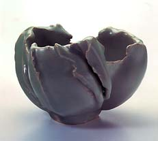
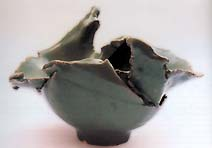

| Jean
François Fouilhoux
Francés contemporáneo que usa el Celadon
Jean
François Fouilhoux ha trabajado con vidriados Celadon durante
más de 25 años. Sus trabajos hechos a mano son vidriados
y cocidos multiples veces antes de alcanzar la perfección
que él busca. Sus vidriados Celadon varían desde un
color azul verdoso claro hasta un verde olivo obscuro. Los trabajos
de Fouilhoux mezclan el vidriado Celadon tradicional chino con una
estética francesa libre de formas.
Fouilhoux estudió en la Escuela Nacional Superior
de Artes Aplicadas en Paris de 1962 a 1968. En 1980 ganó
la medalla de oro en la Feria Internacional de Munich, Alemania,
en 1982 fue galardonado con el premio CSC en el concurso bianual
de Vallauris, Francia y en 1998 recibió el renombrado premio
de Fletcher Challenge Ceramics de Auckland, Nueva Zelanda.

Fouilhoux vive y trabaja en Montprès-Chambord
en el valle del Loira. Lo representa en Europa Galerie
b15.
Kindly translated from the English
by L. Ochoterena, Mexico City.
More Articles
More Artists of the Week
|